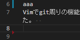

ファイルの左端にgitの差分情報を表示するといのうはVSCodeでいうこんなやつです。
(青や赤のやつです。)

似たようなvimプラグインとしてvim-signifyもあります。
今回はvim-gitgutterを入れてみました。
インストール方法
プラグイン管理にはvim-plugを使っています。
vimrcに下記を追加して、:PlugInstallします。
Plug 'airblade/vim-gitgutter'
設定
set signcolumn=yesは常に左端のサイン列を表示させます。gitgutterは変更があるとサイン列が表示され、そこに記号が表示されます。常にサイン列を表示させることでガタつかないようにしています。set updatetime=100はファイルを変更してサイン列に表示されるまでに時間を100msにしています。- サイン列に表示される記号をカスタマイズしています。
g:gitgutter_map_keys = 0はデフォルトのキーマッピングをオフにしています。これはvim-gitgutterをインストールすると色々なショートカットキーが設定されるのが嫌だったのでオフにしています。- autocomdはサイン列の背景と記号の色を設定しています。
:verbose highlight Statementを実行すると、最後に適用された設定がどれかがわかるのですが、普通に色を設定するとcolorschemeに上書きされていて設定が効かないことが判明したため、autocmdでcolorschemeの後に色が設定されるようにしました。
" Always show sign column
set signcolumn=yes
" By default updatetime is 4000 ms
set updatetime=100
" Use fontawesome icons as signs
let g:gitgutter_sign_added = '+'
let g:gitgutter_sign_modified = '>'
let g:gitgutter_sign_removed = '-'
let g:gitgutter_sign_removed_first_line = '^'
let g:gitgutter_sign_modified_removed = '<'
" Default key mapping off
let g:gitgutter_map_keys = 0
" Execute after loading the color schema
" https://teratail.com/questions/29844#reply-46767
augroup vimrc_vim_gitgutter
autocmd!
" sign column bg color
autocmd VimEnter,ColorScheme * highlight SignColumn guibg=bg ctermbg=bg
" sign column color
autocmd VimEnter,ColorScheme * highlight GitGutterAdd guifg=#000900 ctermfg=2
autocmd VimEnter,ColorScheme * highlight GitGutterChange guifg=#bbbb00 ctermfg=3
autocmd VimEnter,ColorScheme * highlight GitGutterDelete guifg=#ff2222 ctermfg=1
augroup END
- デフォルトで設定されるキーマッピングは全てオフにしたため、個別で必要なキーマッピングで割り当て直しています。
" g is for git
let g:which_key_map.g = {
\ 'name' : '+git' ,
\ 'b' : [':BlamerToggle' , 'git blame toggle'],
\ 'n' : [':GitGutterNextHunk' , 'git next hunk'], # 追加
\ 'p' : [':GitGutterPrevHunk' , 'git previous hunk'], # 追加
\ }
デモ
参考
参考にさせて頂いた記事です。
Tightly Integrating Git into Vim :: JakobGM’s Homepage